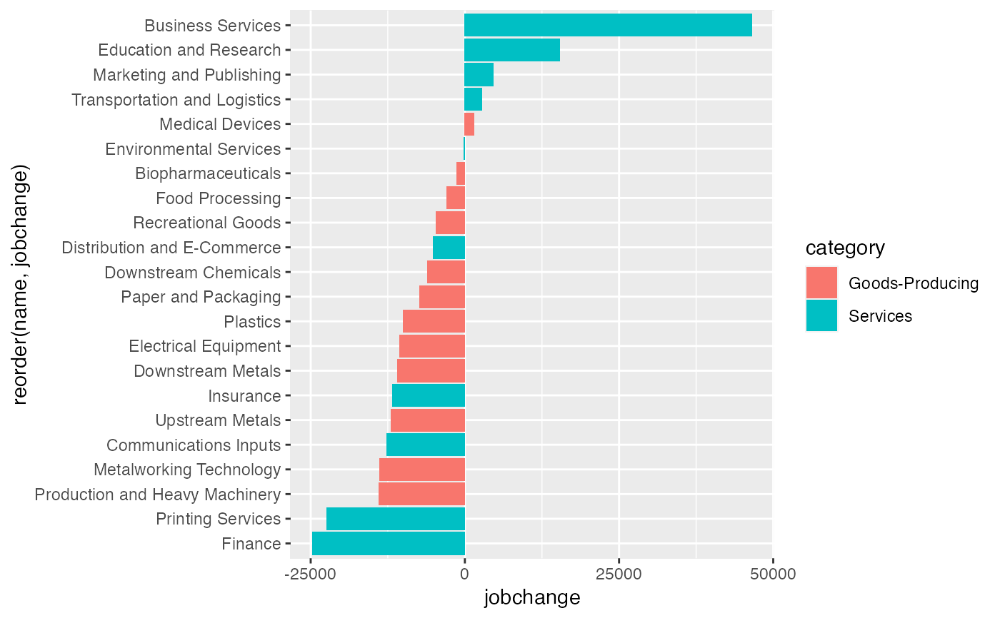

A test dataset containing 2001-17 job change and other data for the 22 specialized traded clusters analyzed in the CMAP Traded Clusters report.
cluster_jobchange
A tibble. 22 rows and 5 variables:
Integer. code of cluster
Char. textual description/cluster title
Factor. Either "goods-producing" or "services"
Factor. "Leading", "Mixed", or "Trailing"
Integer. Total change in employment in the cluster between 2001-17
CMAP traded clusters report
# A bar chart ggplot(cluster_jobchange, aes(x = reorder(name, jobchange), y = jobchange, fill = category)) + geom_col() + coord_flip()